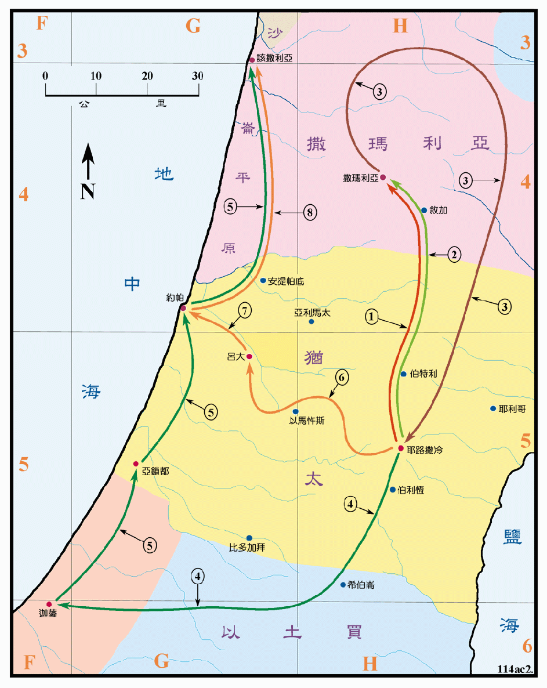

主后30至33年

行动线说明
| 序号 | 圣经 | 说明 |
|---|---|---|
| 1 | 徒8:5-13 | 腓利下撒玛利亚去宣讲基督。 |
| 2 | 徒8:14-24 | 彼得和约翰再去撒玛利亚。 |
| 3 | 徒8:25 | 使徒回耶路撒冷，一路在撒玛利亚各处传扬福音。 |
| 4 | 徒8:26-38 | 腓利在下迦萨的路上传道给埃提阿伯的太监。 |
| 5 | 徒8:39-40 | 腓利在亚锁都和该撒利亚宣传福音。 |
| 6 | 徒9:32-35 | 彼得周流四方的时候，到了吕大，许多人归服了主。 |
| 7 | 徒9:36-43 | 彼得到约帕医治多加。 |
| 8 | 徒10:1-48 | 彼得见异象去该撒利亚的哥尼流家传道。 |
司提反殉道之后，教会在耶路撒冷大遭逼迫，门徒就离开耶路撒冷分散到各处传道，主要是在撒玛利亚和沿海的地区。首先是撒玛利亚人，他们是以色列人和外邦人的混血种族，虽然他们也自认是雅各的后裔，但被犹太人认为不洁，一直受到岐视和排拒，现在福音临到了他们。腓利为埃提阿伯人施洗，是代表救恩临到含族。彼得不久又向哥尼流家传福音，又为他们施洗，这代表福音临到了雅弗族。这都显明福音是为天下万邦万民的。